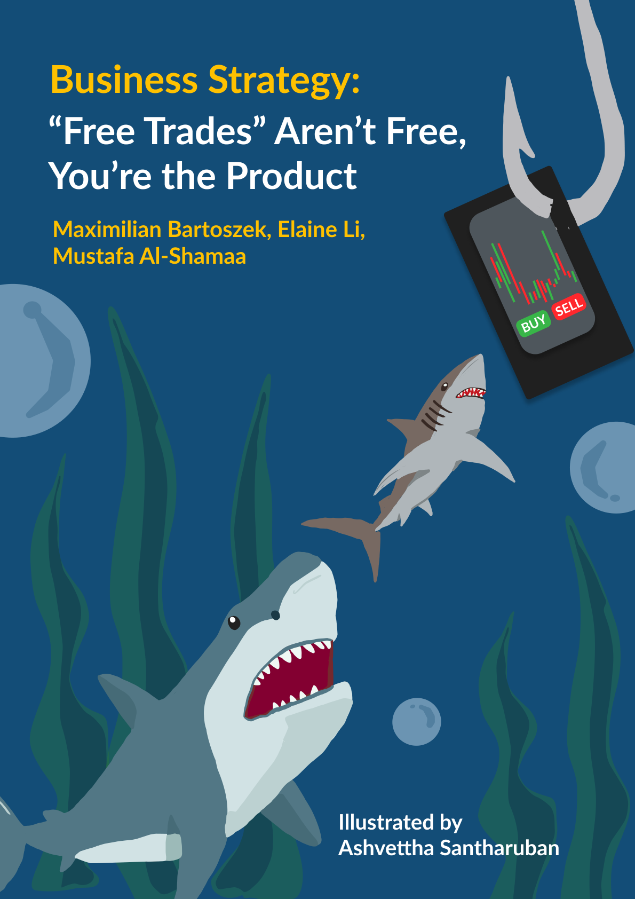

By Maximilian Bartoszek, Elaine Li, Mustafa Al-Shamaa | Illustrated by Ashvettha Santharuban | Winter 2026 Issue | Business Strategy

In 2020, the US Securities and Exchange Commission secretly settled with one of the fastest-growing financial platforms. Their accusation stemmed from how Robinhood misled its clients about how it made money, resulting in trade prices that have lost them billions of dollars. Without acknowledging any wrongdoing, Robinhood made a $65 million payment, and its business model remained unchanged. That was not just one unique case. It provided a glimpse into the real workings of zero-commission trading and the players at work. When Robinhood first began in 2013, it boldly promised that anyone could trade stocks for free. No commissions, no minimums, no catches. Charles Schwab, TD Ameritrade, and E*Trade all followed within a matter of years. For millions of investors, it felt like a revolution. It was not. It was a cruel deception. The costs of investing were not eliminated by zero-commission trading. It just transferred it to a location not visible to the public. Every year, the system known as Payment For Order Flow, or PFOF, steals billions of dollars from retail investors. Payment for order flow has transitioned commission-free trading into a multi-billion-dollar industry built on selling retail order flow, generating hidden costs that harm investors and exposing the issues in the regulations meant to protect them.
The Business of Selling Market Data
Your order does not just get sent to a stock exchange when you click “buy” on a stock in your brokerage app. The trade is executed on your behalf by a third-party wholesaler, like Citadel Securities or Virtu Financial, after your broker secretly reroutes it. The wholesaler pays your broker a small fee per share in exchange for a consistent flow of client orders. That charge is PFOF.
As long as brokers execute the orders at the National Best Bid and Offer (NBBO), which is the greatest publicly posted price available across all exchanges, the arrangement is technically legal in the US. The problem is that “actually good” and “best available” are two different things, as regulators and researchers have increasingly discovered.
Who’s Paying Who?
Why would a wholesaler pay for access to your orders? Because retail investors are predictable. You’re not using institutional models or insider information when you trade. Because retail investors have such low risk profiles, they’re actually trivially easy to trade against on a large scale. Through processing millions of these tiny transactions, these wholesalers are able to identify trends in retail behaviour, improve their pricing methods, and consistently profit from the spread between the purchase and sell prices of every security they come into contact with. The numbers show just how crucial that access is. The 12 biggest US brokerages brought in $3.8 billion in PFOF revenue in 2021 alone, according to a study from the Congressional Research Service. Of that, Robinhood obtained $974 million, or about half of its revenue that year. PFOF accounted for almost 75% of Robinhood’s total revenue in 2020. Additionally, $1.4 billion was pocketed by TD Ameritrade, and another $454 million was collected by E*T rade. These are not “additional sources of income. ” For a majority of these platforms, PFOF is the business.
PFOF places a conflict of interest at the centre of your relationship with your
broker. The company handling your trades is paying your broker, not you. They have an incentive to direct your order to the person who pays them the most, not necessarily the person who offers you the greatest deal.
This has been confirmed in practice by real data. The actual level of service provided to investors varied dramatically, according to a study that compared 85,000 simultaneous market orders among five large brokers. Price improvement, the amount by which your execution price exceeds the specified spread, varies greatly, although all brokers have to adhere to NBBO guidelines. Customers of TD Ameritrade saw price improvements on an average 47.2% of the NBBO spread. Just 26.8% of Robinhood customers saw an improvement. That difference ranges from -7.2 basis points on TD Ameritrade’s side to -31.4 basis points for Robinhood when you factor in transaction fees, too. That difference adds up greatly, especially for aggressive traders who execute hundreds of trades a year.
In its own tests, the SEC discovered a similar pattern. Even after taking into consideration the fees those other brokers were charged at the time, Robinhood customers lost over $34.1 million in price improvement compared to other brokers between October 2016 and June 2019. The SEC came to the conclusion that clients would actually have been better off paying a $5 flat fee at a rival broker rather than trading at Robinhood for orders over 100 shares. Their headlines read “zero commission. ” In reality, they were offering worse deals.
Think of it like an airport kiosk where you exchange money. There’s no advertised fee, just a terrible rate built in. Until you do the math, the extra cost will never be seen.
The Options Problem
PFOF’s equity side is a gradual leak. T rading options is a flood.
Compared to stocks, PFOF payments on options contracts are significantly higher per transaction. Despite making up a much smaller portion of trades by volume, options consistently accounted for more than two-thirds of broker PFOF income in 2020 and 2021, according to SEC rule 606 reports from the top five US retail brokers. This gives brokers a strong incentive to encourage users to trade options. The design choices of zero-commission platforms, gamified notifications, simple interfaces for complex options strategies, and low resistance to multi-leg trades have
all been cited by critics as clear manifestations of that incentive. The broker’s PFOF revenue increases with the frequency with which retail investors trade options. When 54% of your revenue depends on trading volume, building an app that encourages users to trade more isn’t a coincidence; it becomes the business model. The dynamic is reflected in the trading costs of options. The average bidask spread on weekly options can reach double-digit percentages, which can be far more expensive than a $5 or $10 commission that a traditional broker would charge. The trade is free. The spread is not.
The SEC’s Case Against Robinhood
The 2020 SEC enforcement case against Robinhood was noteworthy not just for the amount of money won, but for what it revealed about disclosures. For years, Robinhood had openly stated that “rebates from market makers” were where their money had come from, while avoiding explicit mention of its PFOF dealing. This was determined by the SEC to be a deceptive omission. The fact that their “free” transactions were being sold to third parties and that those third parties were paying various brokers different rates for access to retail traffic was not something customers could actually understand.
The greatest penalty the SEC had imposed on a retail broker for order routing errors was the $65 million settlement. Robinhood did not acknowledge or refute the results. Although they are still publicly accessible, their Rule 606 disclosures–the documents that specify exactly where the clients' orders are routed and what payments are received–are worded in a way that is practically impossible to understand for a typical retail investor.
GameStop and the Reform Debate
The January 2021 GameStop episode virtually instantly altered the political climate surrounding PFOF. The most direct criticism of PFOF from a senior regulator in years came from SEC Chair Gary Gensler, who openly called the practice an “inherent conflict of interest. ” The SEC then suggested a retail order auction system that would force wholesalers to compete in real time for every trade by requiring brokers to submit consumer orders to competitive bidding prior to execution. The idea was that the competition would produce better prices. Brokers and market makers strongly opposed the plan, claiming it would add complexity, slow down execution times, and could cause information leakage that would harm the investors it was meant to protect.
Since then, the rule has been stalled, and disclosure rather than prohibition continues to be the main focus of US regulations. Although Rule 606 reports are submitted to the public, they are prepared in formats that need to be read by experts to understand properly. The mechanism intended to hold PFOF accountable is largely invisible to the people it's meant to protect.
While US regulators are debating marginally, Europe came to the conclusion that PFOF’s conflicts of interest were impossible to avoid with investor protection standards. Beginning June 30, 2026, the European Union has declared that paying for order flow will be strictly prohibited.
Brokers in the EU will no longer be able to get paid for directing consumer orders to specific market makers. Findings from regulators throughout the bloc served as the basis for the decision. Most retail transactions on PFOF venues obtained lower pricing than comparable references, according to the Dutch Authority for the Financial Markets. Only 3.3% of deals routed through brokers that engaged with PFOF achieved the best possible execution, while 86% were performed at prices lower than accessible alternatives. This was discovered by Spain’s CNMV, which looked at trading Spanish equities during the first half of 2021. The average price decline was calculated to be about 1.09 per 1,000 traded. While it may be a small amount per transaction, when you think about the amount changing hands each year in the stock market, that number becomes enormous. What occurs after the ban goes into place will determine whether the United States follows. The pressure on US regulators to take action will increase significantly if European retail investors experience quantifiable improvements in execution quality. For the time being, the difference between the two strategies will serve as a clear test of whether prohibition is the only reform or whether stronger regulations can ever be enough.
What Needs to Change
It is important to recognize how the zerocommission era opened the markets to an entire generation of investors. In 2010, millions of potential participants in the stock market were unable to pay the $10 per trade commissions; yet today, they are investing. Broader participation in capital markets is a real public good. However, access based on hidden fees is not a gift. It is an agreement formed without your knowledge or consent by those who have a direct financial stake in the result. Some brokers currently assert that they voluntarily route orders with their clients’ interests in mind, adhering to internal bestexecution procedures. That is not insignificant. However, a self-reported standard that lacks an external benchmark is more similar to a promise than real accountability. As of this moment, there is no reliable, easily accessible method for a retail investor to confirm whether the execution quality of their broker truly represents those claims, or if it just reflects the arrangement that yields the highest PFOF revenue.
That’s precisely what new policies should address. The SEC or other authoritative groups should establish standardized formats for execution quality reports, written in plain English, that would let retail investors compare brokers on what actually matters. Just mentioning where the orders went and what price one got relative to a real benchmark could help retail investors a lot in choosing the right platform for them. Additionally, capping PFOF payouts in options markets could lessen the greatest point of harm to investors, without eliminating zero-commission trading for regular stock purchases. These are not radical proposals. They serve as the foundation for what a market that genuinely benefits individual investors should already be expected to have. Europe has drawn the line. The SEC has taken notice of the issue. What transpires next will show if regulators are prepared to take action on what they already know, or whether investors will continue to pay for a system invisible to them. Until then, every time you click buy, someone else will too. Except it won’t be stock, but access to your order.